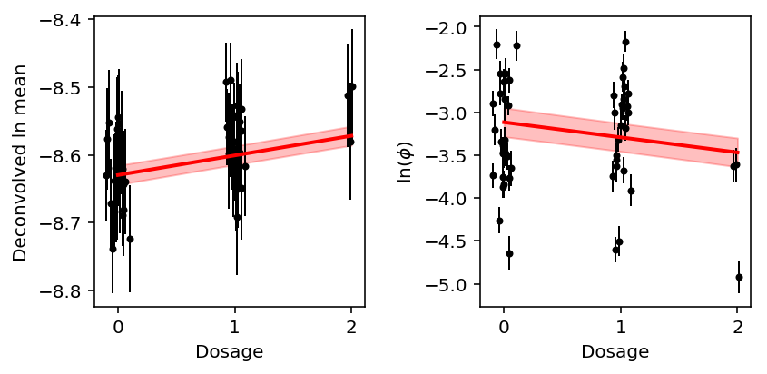
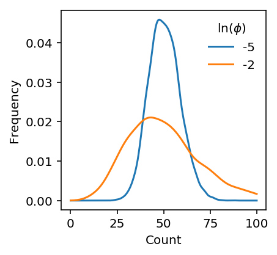

Examples of single cell measurement error
Introduction
Our power analysis found several counter-intuitive results:
- The noise ratio (measurement error variance divided by residual variance) is typically larger for the mean than for the dispersion
- The measurement error variance is sometimes larger than the sample variance, but we still find a QTL
- The estimated prior on effect sizes on mean expression has more density close to zero than the estimated prior on effect sizes on dispersion
Here, we demonstrate these results reflect real features of the data on several examples.
Read the data
Read the summary statistics \(\hat\beta, SE(\hat\beta)\).
mean_stats = pd.read_table('/scratch/midway2/aksarkar/singlecell/power/analytic/mean.txt.gz') disp_stats = pd.read_table('/scratch/midway2/aksarkar/singlecell/power/analytic/disp.txt.gz')
Read the sampling variances \(\hat\sigma^2_{mi}\).
log_mean_sampling_var = pd.read_table('/scratch/midway2/aksarkar/singlecell/power/log_mean-se.txt.gz', index_col=0) disp_sampling_var = pd.read_table('/scratch/midway2/aksarkar/singlecell/power/disp-se.txt.gz', index_col=0)
Read the fitted ash models.
with open('fold-change-ash-results.pkl', 'rb') as f: ash_results = pickle.load(f)
CCT8
CCT8 is one of the cases where we find an eQTL, even though the estimated measurement error variance is larger than the estimated residual variance.
Extract the data pre-computed for the interactive browser.
with sqlite3.connect('/project2/mstephens/aksarkar/projects/singlecell-qtl/browser/browser.db') as conn: params = pd.read_sql( sql="""select mean_qtl_geno.ind, mean_qtl_geno.value as genotype, log_mu, log_phi, logodds, log_mean, log_mean_se, log_phi_se, log_mean + log_mean_se as log_mean_upper, log_mean - log_mean_se as log_mean_lower, log_phi + log_phi_se as log_phi_upper, log_phi - log_phi_se as log_phi_lower from mean_qtl_geno, params where mean_qtl_geno.gene == ? and mean_qtl_geno.gene == params.gene and mean_qtl_geno.ind == params.ind;""", params=('ENSG00000156261',), con=conn)
Estimate the residual variance for the mean, corrected for measurement error.
\[ \hat\sigma^2_r = \frac{1}{n - 1}\sum_i (\tilde{y}_i - \bar{y})^2 - \frac{1}{n}\sum_i \hat\sigma^2_{mi} \]
where \(\tilde{y}_i\) is the observed phenotype of individual \(i\), \(i = 1, \ldots, n\), \(\bar{y} = \frac{1}{n} \sum_i \tilde{y}_i\), and \(\hat\sigma^2_{mi}\) is the estimated sampling variance associated with \(\tilde{y}_i\).
params['log_mean'].var() - log_mean_sampling_var.loc['ENSG00000156261'].mean()
-0.00148092262834108
Do the same for the dispersion.
params['log_phi'].var() - disp_sampling_var.loc['ENSG00000156261'].mean()
0.36559941312947225
For this gene, get the SNP with best Wald statistic \(\frac{{\hat\beta}^2}{V[\hat\beta]}\).
best_eqtl = mean_stats.groupby('gene').apply(lambda x: x.loc[np.square(x['beta'] / x['se']).idxmax()]).loc['ENSG00000156261'] best_eqtl
Unnamed: 0 rs2070611.chr21.30445774 beta 0.028947 gene ENSG00000156261 se 0.00691489 Name: ENSG00000156261, dtype: object
We previously estimated the ash prior genome-wide by taking 10 random SNPs
for every gene.

Given the EB prior, recover the posterior distribution of the effect size for the best SNP identified above.
shrunk_eqtl = ashr.ash(best_eqtl['beta'], best_eqtl['se'], fixg=True, g=ash_results['mean'].rx2('fitted_g')) pd.Series({'pm': float(np.array(ashr.get_pm(shrunk_eqtl))), 'lfsr': float(np.array(ashr.get_lfsr(shrunk_eqtl)))})
lfsr 0.008324 pm 0.021778 dtype: float64
On the log scale, the posterior effect size on the natural log of the mean is roughly 0.02, despite the prior putting most density much closer to 0.
This is a tiny effect size, but we need to consider it relative to the variation in the phenotype. Define \(\beta = \lambda \sigma_r\), and estimate \(\lambda\) assuming \(V[y] = \sigma_r^2\).
best_eqtl['beta'] / params['log_mean'].std()
Do the same for the best dQTL.
best_dqtl = disp_stats.groupby('gene').apply(lambda x: x.loc[np.square(x['beta'] / x['se']).idxmax()]).loc['ENSG00000156261']
shrunk_dqtl = ashr.ash(best_dqtl['beta'], best_dqtl['se'], fixg=True, g=ash_results['disp'].rx2('fitted_g')) pd.Series({'beta': best_dqtl['beta'], 'se': best_dqtl['se'], 'pm': float(np.array(ashr.get_pm(shrunk_dqtl))), 'lfsr': float(np.array(ashr.get_lfsr(shrunk_dqtl)))})
beta -0.176113 lfsr 0.750243 pm -0.014714 se 0.082764 dtype: float64
Unlike the eQTL effect size, the dQTL effect size is shrunk essentially to zero, and has high lfsr.
Plot the phenotype by genotype class, along with the estimated regression line and prediction confidence intervals.
plt.clf() fig, ax = plt.subplots(1, 2) fig.set_size_inches(6, 3) x = params['genotype'] + np.random.normal(scale=0.05, size=params.shape[0]) ax[0].errorbar(x=x, y=params['log_mean'], yerr=params['log_mean_se'], marker='o', c='k', ms=3, lw=1, ls='') ax[0].set_ylabel('Deconvolved ln mean') grid = np.linspace(0, 2, 100) yhat = params['log_mean'].mean() + (grid - grid.mean()) * best_eqtl['beta'] # https://rpubs.com/aaronsc32/regression-confidence-prediction-intervals pred_se = best_eqtl['se'] * (1 + 1 / grid.shape[0] + np.square(grid - grid.mean()) / np.square(grid - grid.mean()).sum()) ax[0].plot(grid, yhat, c='r', lw=2, zorder=99) ax[0].fill_between(grid, yhat - 1.96 * pred_se, yhat + 1.96 * pred_se, color='r', alpha=0.25) ax[1].errorbar(x=x, y=params['log_phi'], yerr=params['log_phi_se'], marker='o', c='k', ms=3, lw=1, ls='') yhat = params['log_phi'].mean() + (grid - grid.mean()) * best_dqtl['beta'] pred_se = best_dqtl['se'] * (1 + 1 / grid.shape[0] + np.square(grid - grid.mean()) / np.square(grid - grid.mean()).sum()) ax[1].plot(grid, yhat, c='r', lw=2, zorder=99) ax[1].fill_between(grid, yhat - 1.96 * pred_se, yhat + 1.96 * pred_se, color='r', alpha=0.25) ax[1].set_ylabel('$\ln(\phi)$') for a in ax: a.set_xlabel('Dosage') fig.tight_layout()

Overall, the example suggests:
- The major difference between eQTL mapping and dQTL mapping is within genotype class variance. The within genotype class variance reflects PVE (namely, variance unexplained by genotype)
- Even if the measurement error variance is comparable to the effect size or even the phenotypic variance, we can still find a QTL if the PVE is high enough (within genotype class variance is low enough)
Plot synthetic example
def rnbinom(log_mu, log_phi, n_samples): n = np.exp(-log_phi) p = 1 / (1 + np.exp(log_mu + log_phi)) return st.nbinom(n=n, p=p).rvs(n_samples)
plt.clf() plt.gcf().set_size_inches(3, 3) for log_phi in (-5, -2): x = rnbinom(np.log(1.5e5) - 8, log_phi, 5000) f = st.gaussian_kde(x) grid = np.linspace(0, 100, 1000) plt.plot(grid, f(grid), label=log_phi) plt.legend(frameon=False, title='$\ln(\phi)$') plt.xlabel('Count') plt.ylabel('Density')
Text(0,0.5,'Frequency')
